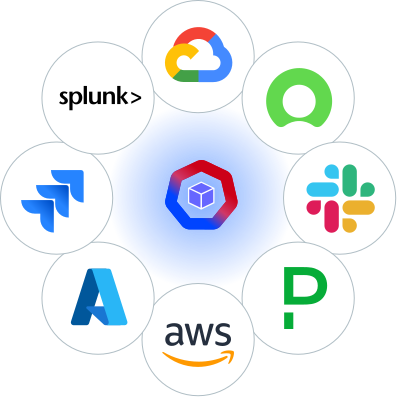

Clear lifecycle framing
AccuKnox explains onboarding, discovery, classification, prioritization, and remediation in a sequence buyers can follow.
Baseline analysis from the public DSPM page, with explicit constraints and inferred readiness gaps.
Public evidence suggests AccuKnox is not missing category relevance. It is missing market legibility. The page explains capabilities, deployment, workflow, and broad coverage well enough for technical readers. What it does not yet do at category-leading level is show the actual decision experience: what the first landing screen looks like, how an analyst drills into a high-risk asset, how an architect validates blast radius, and how an auditor exports evidence without leaving the product.
The design opportunity is therefore unusually high leverage. A stronger public and demo-ready UX layer can convert existing technical strengths into a more persuasive buying experience without requiring AccuKnox to become a copy of Cyera, Varonis, or BigID.

AccuKnox explains onboarding, discovery, classification, prioritization, and remediation in a sequence buyers can follow.
Agentless deployment, multi-cloud support, and hybrid coverage are aligned with enterprise evaluation criteria.
CNAPP and runtime context give AccuKnox a believable path to differentiated correlated risk scoring.
The combined story of cloud posture, workload context, and DSPM can be stronger than visibility-only competitors if expressed well.
Public buyers still have to imagine the dashboard, findings table, asset detail page, and evidence export flow.
RBI, DPDP, and TRAI obligations are not prominent enough to act as a regional wedge.
Competitors are far more explicit about who can access what, why that is dangerous, and how to fix it.
DSPM-specific customer proof, analyst framing, and operational evidence are lighter than peer experiences.
| Claim area | What is publicly visible | Proof type | What is still missing |
|---|---|---|---|
| Coverage | Multi-cloud, hybrid, broad source support | Capability statement plus integration visuals | Connector-by-connector readiness and scan state UX |
| Discovery | Discovery and classification narrative, accuracy metrics | Textual proof | Landing dashboard showing discovered assets, confidence, and deltas over time |
| Risk prioritization | Finding and prioritization capabilities described | Capability statement | Explainability layer: why this finding is critical, what exposure path exists, what business data is impacted |
| Remediation | Workflow stage named | Conceptual workflow | Action center, approvals, automation actions, and proof of closure |
| Compliance | Global frameworks listed across AccuKnox portfolio | Badge and capability language | Region-specific control mapping, failing obligations, evidence export, attestation flows |
| Differentiation | CNAPP adjacency and cloud-native positioning | Strategic narrative | Correlated-risk screens where data exposure is connected to active workload or cloud posture risk |
Not every exposed dataset matters equally. AccuKnox can weight data sensitivity by real cloud posture, reachable attack paths, and workload context.
Most DSPM tools stop at visibility plus remediation suggestion. AccuKnox can connect posture findings with runtime and incident-response workflows.
RBI, DPDP, and TRAI evidence packs can create geographic and vertical differentiation instead of being a late sales overlay.
Agentless and Kubernetes-native design can be made visible as onboarding simplicity, not just architecture jargon.
| Debt | Severity | Why it matters | Fix direction |
|---|---|---|---|
| No screenshot-led landing experience | Critical | Competes poorly against Cyera and Varonis first impression | Design a flagship dashboard with sensitive-data risk, exposure, compliance, and action summary |
| Weak access-story surface | Critical | Access and blast radius now anchor the buying conversation | Build an identity-aware exposure graph and asset-level access panel |
| Limited proof of remediation workflows | High | Buyers need closure, not just findings | Add remediation center, approval patterns, automation outcomes, and evidence log |
| Compliance not localized for India | High | Misses a meaningful enterprise wedge for Airtel-like accounts | Add RBI, DPDP, and TRAI control packs and export views |
| Thin DSPM-specific trust layer | Medium | Peer vendors reduce anxiety with visible proof and recognition | Add customer outcomes, screenshots, benchmark metrics, and role-based evidence stories |
| Capability | AccuKnox Position | Relative to Market | Immediate Improvement |
|---|---|---|---|
| Discovery story | Conceptually clear | Behind on proof visuals | Add first-login dashboard screenshot and scan outcomes |
| Risk prioritization | Mentioned | Behind Cyera/Varonis narrative depth | Publish explainable finding detail view |
| Lineage and flow | Provenance claim present | Behind demonstrated lineage UX | Build lineage explorer with timeline |
| Compliance | Global frameworks listed | Weak India enterprise fit signal | Add RBI/DPDP/TRAI control packs and exports |
| Remediation | Stage is named | Needs action proof | Expose one-click and workflow remediation patterns |